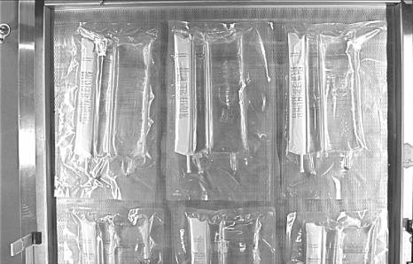
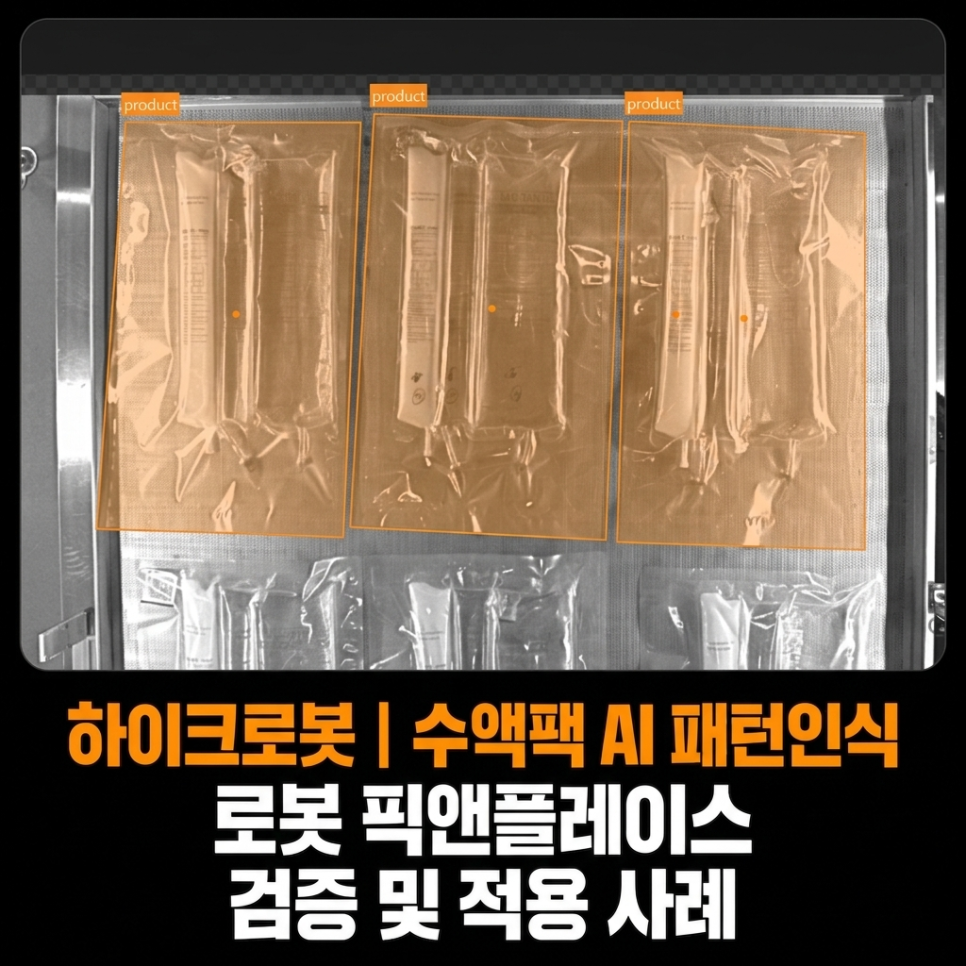
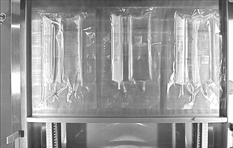
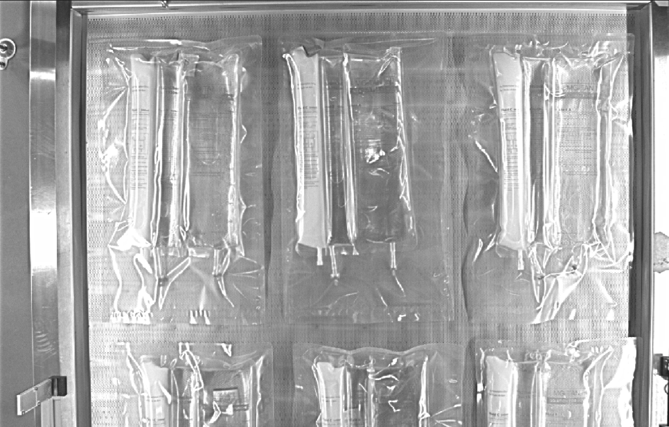
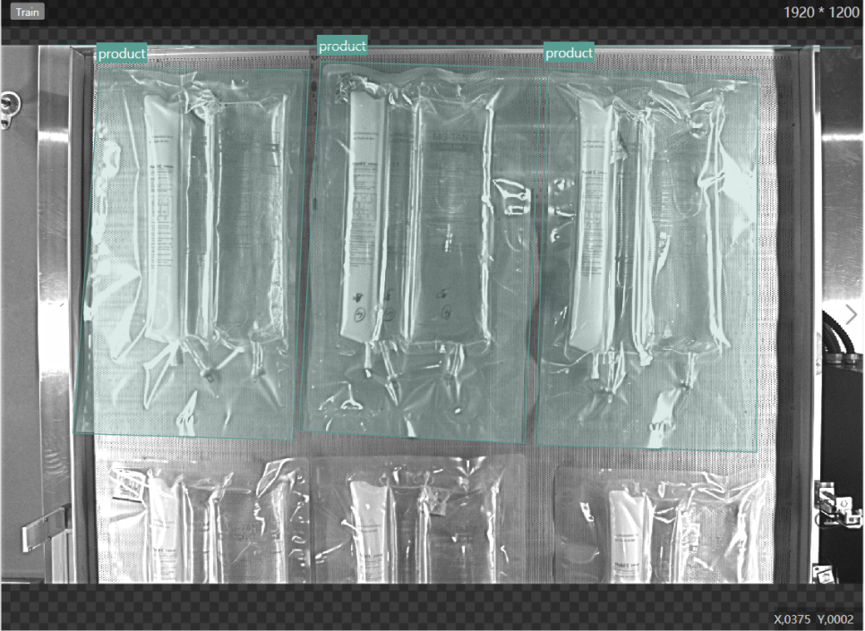
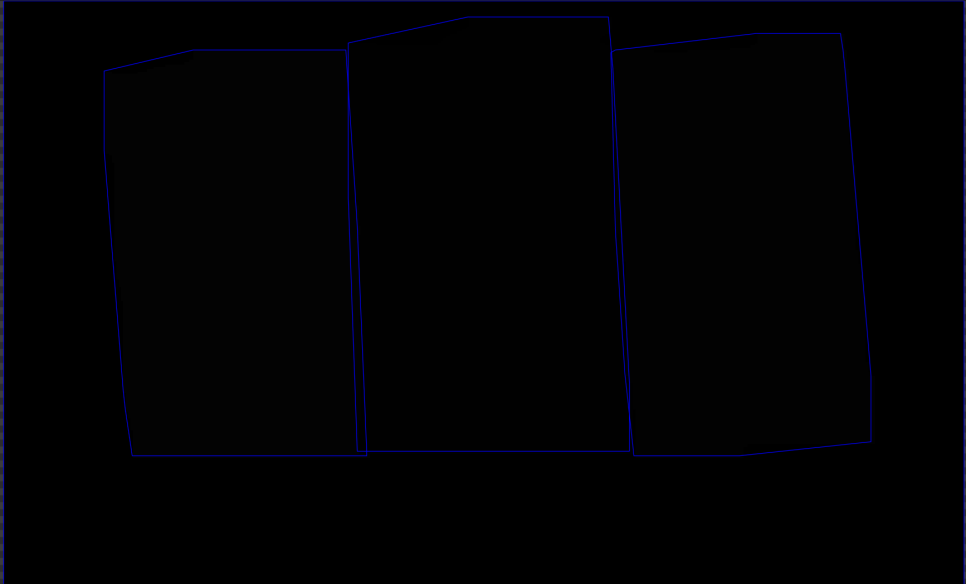
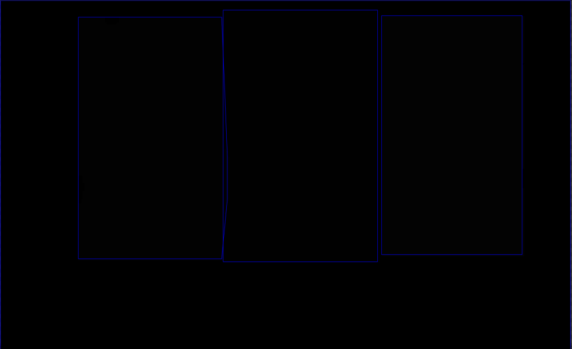
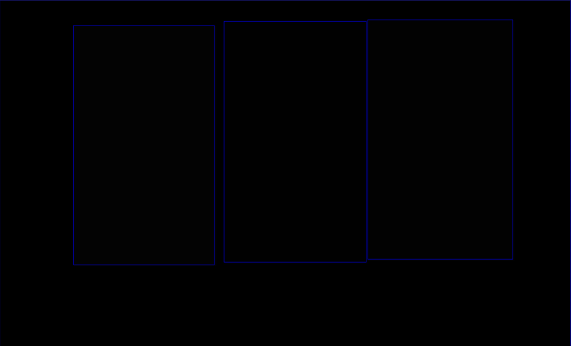

바이오 · 제약 수액팩 · 로봇비전
수액팩 AI Pattern Matching·로봇 이송 시스템 사례
AI Pattern Matching · 로봇
형상이 변하는 투명 수액팩과 타공 스테인리스 배경에서 AI Pattern Matching으로 위치·방향을 인식한 사례입니다. X·Y·T 좌표를 로봇에 전달해 다음 공정으로 이송했습니다.

Project Summary
프로젝트 핵심 구성
- 산업
- 바이오 · 제약 수액팩
- 검사·자동화 대상
- 수액팩 AI Pattern Matching·로봇 이송
- 주요 기술
- AI Pattern Matching · 로봇
- 적용 구분
- 프로젝트 사례
01 · Overview
프로젝트 개요
형상이 변하는 투명 수액팩과 타공 스테인리스 배경에서 AI Pattern Matching으로 위치·방향을 인식한 사례입니다. X·Y·T 좌표를 로봇에 전달해 다음 공정으로 이송했습니다.
02 · Problem
프로젝트에서 해결해야 했던 문제
투명 비닐·액체에 의한 변형 / 제품·배경의 난반사 / X·Y·T 좌표 추출 조건에 대응해야 했습니다.
- 투명 비닐·액체에 의한 변형
- 제품·배경의 난반사
- X·Y·T 좌표 추출
03 · System
검사·자동화 시스템 구성
형상이 변하는 투명 수액팩과 타공 스테인리스 배경에서 AI Pattern Matching으로 위치·방향을 인식한 사례입니다. X·Y·T 좌표를 로봇에 전달해 다음 공정으로 이송했습니다.
AI Pattern Matching
X·Y·T 계산
로봇 Pick & Place

04 · Inspection
프로젝트 배경
이번 프로젝트는 바이오·제약 생산라인에서 수액팩을 로봇이 자동으로 집어 다음 공정으로 이송하는 Robot Pick & Place 시스템을 구축한 사례입니다.
Robot Pick & Place 시스템에서 가장 중요한 것은 제품의 위치(X, Y)와 회전각(T)을 정확하게 검출하는 것입니다.
하지만 이번 프로젝트는 일반적인 머신비전 프로젝트보다 훨씬 어려운 조건을 가지고 있었습니다.
05 · Inspection
프로젝트 개요
이번 프로젝트는 스테인리스 팔레트 위에 놓인 수액팩의 위치를 정확하게 검출하여 로봇이 자동으로 Pick & Place를 수행하는 시스템입니다.
비전 시스템은
제품 위치(X)
제품 위치(Y)
회전각(T)
을 계산하여 로봇으로 전달하고,
로봇은 전달받은 좌표를 이용하여 수액팩을 정확하게 집어 다음 공정으로 이송하도록 구성하였습니다.


06 · Inspection
일반적인 패턴매칭으로는 매우 어려운 조건
이번 프로젝트의 가장 큰 어려움은 검사 대상이었습니다.
수액팩은
투명 비닐 재질
내부 액체로 인해 계속 형태가 변함
비닐이 출렁이며 같은 제품도 항상 다른 모양
표면 난반사가 매우 심함
이라는 특징을 가지고 있습니다.
여기에 제품을 올려놓는 팔레트는 타공된 스테인리스 재질로 제작되어 있어 배경에서도 강한 반사가 발생하였습니다.
즉,
같은 제품이라도 촬영할 때마다 전혀 다른 이미지처럼 보이는 매우 어려운 환경이었습니다.
이러한 조건에서는 일반적인 Pattern Matching만으로 안정적인 위치 검출을 수행하기가 사실상 어려웠습니다.
07 · Inspection
조명만으로 해결할 수 없는 환경
머신비전 프로젝트에서는 조명이 매우 중요합니다.
하지만 이번 프로젝트는 조명을 아무리 변경해도 제품 특성상 항상 동일한 영상으로 만드는 것이 거의 불가능했습니다.
수액팩은
내부 액체의 움직임
비닐 주름
난반사
제품의 미세한 변형
등이 계속 발생하기 때문에 광학 조건만으로는 문제를 해결할 수 없었습니다.
따라서 이번 프로젝트에서 조명의 역할은
"반사를 완전히 없애는 것"이 아니라 일정한 밝기를 유지하는 것에 집중하였습니다.

08 · Inspection
AI Pattern Matching 적용
이번 프로젝트에서는 AI Pattern Matching을 적용하여 제품을 학습시켰습니다.
AI는 다양한 형태의 수액팩 이미지를 학습하여
제품 위치와 방향을 안정적으로 인식하도록 구성되었습니다.
일반적인 패턴매칭과 달리 제품이 조금 변형되거나 모양이 달라져도 동일한 제품으로 인식할 수 있어 실제 생산 환경에서도 높은 안정성을 확보할 수 있었습니다.



09 · Inspection
Robot Pick & Place를 위한 정밀 좌표 추출
AI가 제품을 인식한 후에는
X 좌표
Y 좌표
회전각(T)
을 정밀하게 계산하여 로봇으로 전달합니다.
로봇은 전달받은 좌표를 이용하여 수액팩을 정확하게 집어 다음 공정으로 이송하도록 구성하였습니다.
Robot Pick & Place에서는 위치 검출의 정확도가 매우 중요하며, 작은 오차도 로봇의 Pick 실패로 이어질 수 있습니다.
이번 프로젝트에서는 AI Pattern Matching을 통해 로봇이 안정적으로 작업할 수 있는 좌표를 지속적으로 제공할 수 있었습니다.
10 · Inspection
프로젝트 적용 효과
이번 프로젝트를 통해 다음과 같은 효과를 얻을 수 있었습니다.
Robot Pick & Place 자동화
AI Pattern Matching 적용
투명 수액팩 안정적 위치 인식
X, Y, T 좌표 정밀 추출
일반 Pattern Matching의 한계 극복
다양한 제품 형태 대응
로봇 Pick 성공률 향상
생산 자동화 및 작업 효율 향상
11 · Inspection
적용 시 고려사항
이번 프로젝트는 단순한 위치 검출 프로젝트가 아니라,
일반적인 Pattern Matching으로는 해결하기 어려운 환경에서 AI Pattern Matching을 적용하여 Robot Pick & Place를 성공적으로 구현한 사례입니다.
투명 제품, 난반사, 형태 변화가 큰 제품처럼 기존 룰베이스 방식으로 해결하기 어려운 검사 환경에서는 AI 기반 머신비전이 매우 효과적인 대안이 될 수 있습니다.
ASPEC은 자동차, 반도체, 제약·바이오, 식품, 전자부품 등 다양한 산업 분야에서 머신비전 시스템, AI 비전검사, Robot Pick & Place, OCR, 바코드 리더기 프로젝트를 수행하며 축적한 경험을 바탕으로 고객의 생산 환경에 최적화된 솔루션을 제공하고 있습니다.
Robot Pick & Place, AI Pattern Matching, 위치 보정, 머신비전 자동화 시스템 구축에 대해 궁금한 사항이 있으시면 언제든지 문의해 주시기 바랍니다.
Operation
현장 적용과 운영 조건
형상이 변하는 투명 수액팩과 타공 스테인리스 배경에서 AI Pattern Matching으로 위치·방향을 인식한 사례입니다. X·Y·T 좌표를 로봇에 전달해 다음 공정으로 이송했습니다.
- 투명 비닐·액체에 의한 변형
- 제품·배경의 난반사
- X·Y·T 좌표 추출
Result
적용 효과
- 투명 비닐·액체에 의한 변형
- 제품·배경의 난반사
- X·Y·T 좌표 추출
Engineering
ASPEC의 머신비전 시스템 설계 방식
검사 대상의 재질과 형상, 설치 공간과 생산 조건에 맞춰 장비·광학·소프트웨어와 설비 연동을 함께 검토합니다.
- 투명 비닐·액체에 의한 변형
- 제품·배경의 난반사
- X·Y·T 좌표 추출
08 · Related Cases
관련 구축사례
비슷한 공정의 자동화를 검토하고 계신가요?
검사 대상과 불량 샘플, 설치 공간, 택타임을 알려주시면 적용 구성을 검토해 드립니다.